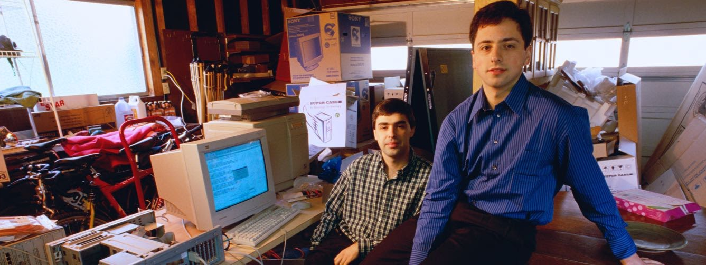
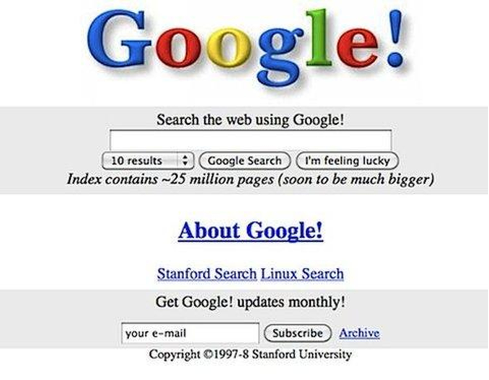

How google made?
The Google story begins in 1995 at Stanford University. Larry Page was considering Stanford for grad school and Sergey Brin, a student there, was assigned to show him around. By some accounts, they disagreed about nearly everything during that first meeting, but by the following year they struck a partnership. Working from their dorm rooms, they built a search engine that used links to determine the importance of individual pages on the World Wide Web. They called this search engine Backrub. Soon after, Backrub was renamed Google (phew). The name was a play on the mathematical expression for the number 1 followed by 100 zeros and aptly reflected Larry and Sergey's mission “to organize the world’s information and make it universally accessible and useful.” Over the next few years, Google caught the attention of not only the academic community, but Silicon Valley investors as well. In August 1998, Sun co-founder Andy Bechtolsheim wrote Larry and Sergey a check for $100,000, and Google Inc. was officially born. With this investment, the newly incorporated team made the upgrade from the dorms to their first office: a garage in suburban Menlo Park, California, owned by Susan Wojcicki (employee #16 and former CEO of YouTube). Clunky desktop computers, a ping pong table, and bright blue carpet set the scene for those early days and late nights. (The tradition of keeping things colorful continues to this day.)
Google has always been different from others. The first server was made from Lego pieces, and the first Doodle (1998) informed site visitors that all Google employees were taking the day off and going to the Burning Man festival. Despite the originality of our approach to work, our motto was simple. View, California The company's headquarters, also known as the Googleplex, are still located there today. Everyone loved the new office, even Joschka!
First googel(google)
